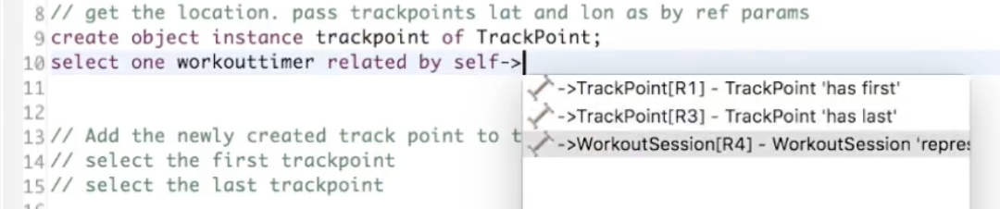
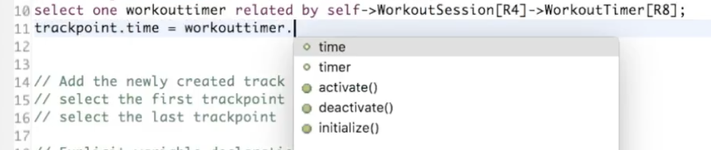
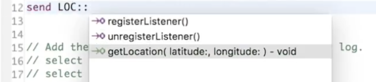
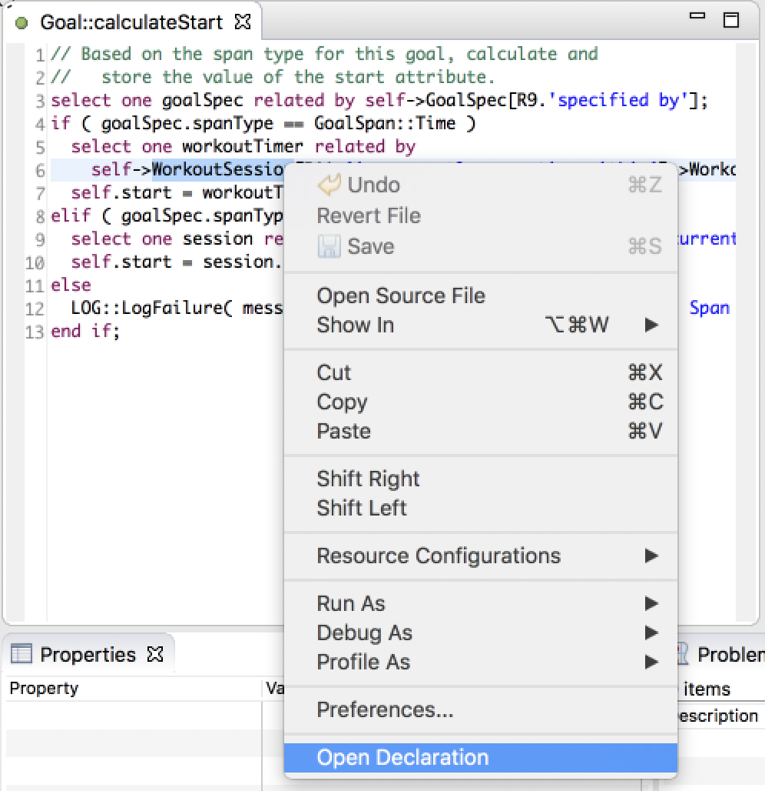

What's New in BridgePoint 6.8.0
Release Highlights
- OAL Editor Content Assist and Open Declaration
- Packaging Updates
OAL Editor Content Assistance and Open Declaration
- The BridgePoint OAL editor now provides context-based assistance suggestions. This
oft-requested feature is a significant enhancement and productivity booster. Content
assistance is set to display automatically for some operators and may also be brought
up by the user.

Figure 1 - Relationship

Figure 2 - Instance Variable

Figure 3 - Port
Preferences for Content Assistance are available. The preferences are described in
the Help system at BridgePoint UML Suite Help > Reference > User Interface > xtUML Modeling Perspective Preferences > Content Assist
Open declaration - The OAL editor now supports navigating to the declaration or first use
of instances and variables. To use this feature, select the text of the element, activate the
context menu, and then choose Open Declaration.

Figure 4 - Context Menu Entry
Packaging Updates
- Maven2Eclipse is used to build the MASL editor Xtext-based plug-ins. The m2e plug-in
is now included in the BridgePoint Developer package.
- BridgePoint is no longer shipped with 32-bit versions. BridgePoint is available in
64-bit versions for MacOS, Linux, and Windows.